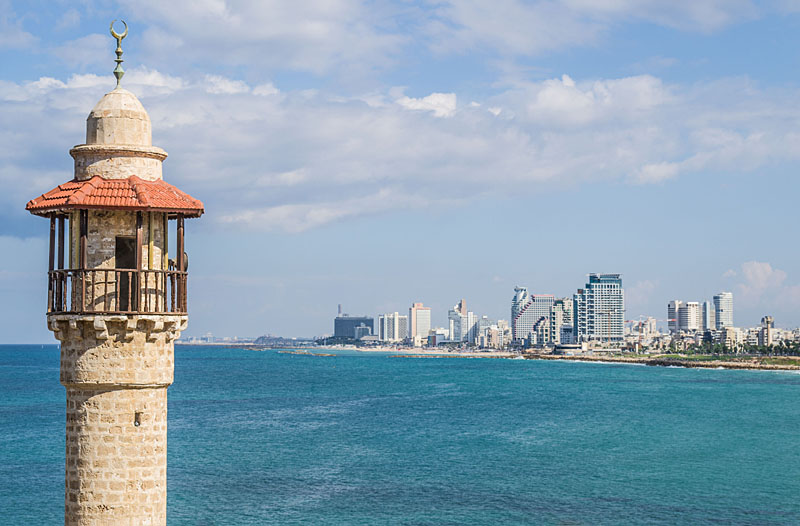

Tel Aviv Yafo

In Tel Aviv, old meets new. All you have to do is walk down the waterfront to the old harbour. In the foreground is the minaret of the Al-Bahr mosque in the old city of Yafo and in the background the skyline of Tel Aviv.